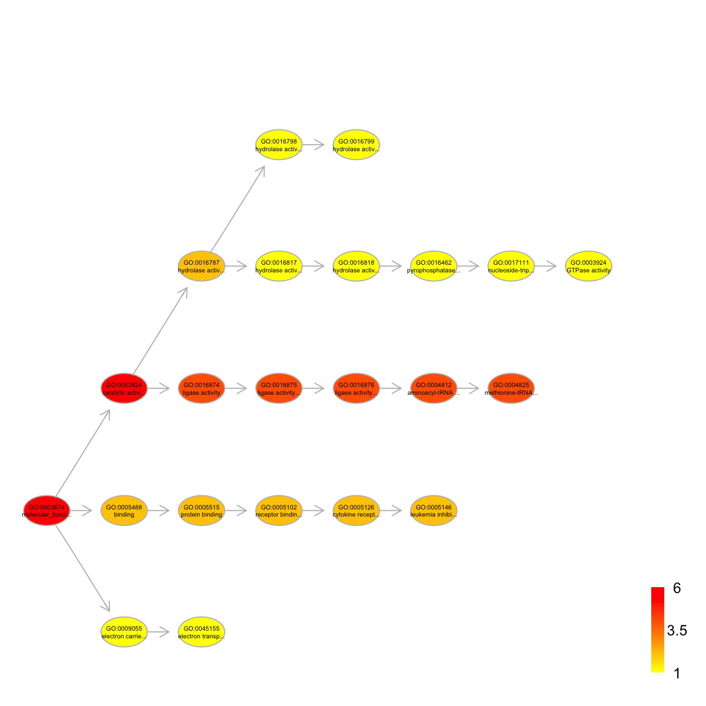

dcDAGannotate is supposed to produce a subgraph induced by the
input annotation data, given a direct acyclic graph (DAG; an ontology).
The input is a graph of "igraph" or "Onto" object, a list of the
vertices containing annotation data, and the mode defining the paths to
the root of DAG. The induced subgraph contains vertices (with
annotation data) and their ancestors along with the defined paths to
the root of DAG. The annotations at these vertices (including their
ancestors) are also updated according to the true-path rule: a domain
annotated to a term should also be annotated by its all ancestor terms.
dcDAGannotate(g, annotations, path.mode = c("all_paths", "shortest_paths", "all_shortest_paths"),
verbose = TRUE)
OntoAnno, that is, the
vertices/nodes for which annotation data are providedsubg: an induced subgraph, an object of class "igraph" or
"Onto" (the same as input). In addition to the original attributes to
nodes and edges, the return subgraph is also appended by new node
attributes: "annotations", which contains a list of domains either as
original annotations or inherited annotations; "IC", which stands for
information content defined as negative 10-based log-transformed
frequency of domains annotated to that term.
For the mode "shortest_paths", the induced subgraph is the most concise, and thus informative for visualisation when there are many nodes in query, while the mode "all_paths" results in the complete subgraph.
# 1) load onto.GOMF (as 'Onto' object) g <- dcRDataLoader('onto.GOMF')'onto.GOMF' (from package 'dcGOR' version 1.0.4) has been loaded into the working environment# 2) load SCOP superfamilies annotated by GOMF (as 'Anno' object) Anno <- dcRDataLoader('SCOP.sf2GOMF')'SCOP.sf2GOMF' (from package 'dcGOR' version 1.0.4) has been loaded into the working environment# 3) prepare for annotation data # randomly select 5 terms vertices (and their annotation data) annotations <- Anno[,sample(1:dim(Anno)[2], 5)] # 4) obtain the induced subgraph according to the input annotation data # 4a) based on all possible paths (i.e. the complete subgraph induced) dcDAGannotate(g, annotations, path.mode="all_paths", verbose=TRUE)At level 8, there are 2 nodes, and 2 incoming neighbors. At level 7, there are 2 nodes, and 2 incoming neighbors. At level 6, there are 3 nodes, and 3 incoming neighbors. At level 5, there are 4 nodes, and 6 incoming neighbors. At level 4, there are 4 nodes, and 5 incoming neighbors. At level 3, there are 7 nodes, and 3 incoming neighbors. At level 2, there are 4 nodes, and 1 incoming neighbors. At level 1, there are 1 nodes, and 0 incoming neighbors.An object of S4 class 'Onto' @adjMatrix: a direct matrix of 27 terms (parents/from) X 27 terms (children/to) @nodeInfo (InfoDataFrame) nodeNames: GO:0003674 GO:0003824 GO:0004872 ... GO:0003774 GO:0080025 (27 total) nodeAttr: term_id term_name term_namespace term_distance annotations IC# 4b) based on shortest paths (i.e. the most concise subgraph induced) dag <- dcDAGannotate(g, annotations, path.mode="shortest_paths", verbose=TRUE)At level 8, there are 1 nodes, and 1 incoming neighbors. At level 7, there are 2 nodes, and 2 incoming neighbors. At level 6, there are 2 nodes, and 2 incoming neighbors. At level 5, there are 3 nodes, and 3 incoming neighbors. At level 4, there are 4 nodes, and 4 incoming neighbors. At level 3, there are 5 nodes, and 3 incoming neighbors. At level 2, there are 3 nodes, and 1 incoming neighbors. At level 1, there are 1 nodes, and 0 incoming neighbors.# 5) color-code nodes/terms according to the number of annotations if(class(dag)=='Onto') dag <- dcConverter(dag, from='Onto', to='igraph')Your input object 'dag' of class 'Onto' has been converted into an object of class 'igraph'.data <- sapply(V(dag)$annotations, length) names(data) <- V(dag)$name dnet::visDAG(g=dag, data=data, node.info="both")
dcDAGannotate.r
dcDAGannotate.Rd
dcDAGannotate.pdf
dcRDataLoader, dcEnrichment,
dcDAGdomainSim, dcConverter
){kind=link}